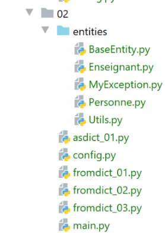

13. الفئتان العامتان [BaseEntity] و [MyException]
نقوم الآن بتعريف فئتين سنستخدمهما بانتظام لاحقًا.

13.1. الفئة MyException
توفر الفئة [MyException] (MyException.py) فئة استثناءات خاصة بها:
# فئة استثناء مملوكة مشتقة من [BaseException]
class MyException(BaseException):
# منشئ
def __init__(self: object, code: int, message: str):
# الأصل
BaseException.__init__(self, message)
# رمز الخطأ
self.code = code
# toString
def __str__(self):
return f"MyException[{self.code}, {super().__str__()}]"
# مُستخرج
@property
def code(self) -> int:
return self.__code
# المُعيّن
@code.setter
def code(self, code: int):
# يجب أن يكون رمز الخطأ عددًا صحيحًا موجبًا
if isinstance(code, int) and code > 0:
self.__code = code
else:
# استثناء
raise BaseException(f"code erreur {code} incorrect")
ملاحظات
- السطر 2: الفئة [MyException] مشتقة من الفئة المُعرَّفة مسبقًا [BaseException]؛
- السطر 4: يقبل المُنشئ معلمتين:
- [code]: رمز خطأ صحيح؛
- [message]: رسالة خطأ؛
- السطر 6: يتم تمرير رسالة الخطأ إلى الفئة الأم؛
- الأسطر 14-27: تتم معالجة السمة [code] عبر دالة getter / setter؛
- الأسطر 23-24: يتم التحقق من صحة السمة [code]: يجب أن تكون عددًا صحيحًا أكبر من 0؛
13.2. الفئة [BaseEntity]
ستكون الفئة [BaseEntity] هي الفئة الأم لمعظم الفئات التي سننشئها لتغليف المعلومات المتعلقة بكائن ما. في ما يلي، سنستخدم بشكل أساسي نوعين من الفئات:
- الفئات التي لا تهدف سوى إلى تغليف المعلومات المتعلقة بكائن واحد في مكان واحد. ولن تحتوي هذه الفئات على سلوكيات (طرق) بخلاف طرق الحصول (getters) / التعيين (setters) ووظيفة العرض (__str__). إذا كان هناك N كائنات يجب إدارتها، فسيتم إنشاء مثيلات لهذه الفئات N مرة. وستكون [BaseEntity] هي الفئة الأم لهذا النوع من الفئات؛
- فئات دورها الرئيسي هو تغليف الطرق وقليل جدًّا من المعلومات. لن يتم إنشاء مثيلات لهذه الفئات سوى مرة واحدة (فئة فردية). دورها هو تنفيذ خوارزميات التطبيق؛
الفئة [BaseEntity] هي كما يلي:
# الاستيرادات
import json
import re
from MyException import MyException
class BaseEntity(object):
# الخصائص المستبعدة من حالة الفئة
excluded_keys = []
# خصائص الفئة
@staticmethod
def get_allowed_keys() -> list:
# id: معرف الكائن
return ["id"]
# toString
def __str__(self) -> str:
return self.asjson()
# مُسترد
@property
def id(self) -> int:
return self.__id
# المعرّف
@id.setter
def id(self, id):
# يجب أن يكون المعرف عددًا صحيحًا >=0
try:
id = int(id)
erreur = id < 0
except:
erreur = True
# خطأ؟
if erreur:
raise MyException(1, f"L'identifiant d'une entité {self.__class__} doit être un entier >=0")
else:
self.__id = id
def fromdict(self, state: dict, silent=False):
…
def set_value(self, key: str, value, new_attributes) -> dict:
…
def asdict(self, included_keys: list = None, excluded_keys: list = []) -> dict:
…
def asjson(self, excluded_keys: list = []) -> str:
…
def fromjson(self, json_state: str):
…
تعليقات
- الهدف من الفئة [BaseEntity] هو تسهيل عمليات التحويل بين «الكائن» و«القاموس» وبين «الكائن» و«jSON». وبالتالي، يتم توفير الطرق التالية:
- [asdict]: تُرجع قاموس خصائص الكائن؛
- [fromdict]: تنشئ كائنًا من قاموس؛
- [asjson]: تُرجع السلسلة jSON الخاصة بالكائن كما تفعل الدالة [__str__]؛
- [fromjson]: ينشئ كائنًا من سلسلته jSON؛
- الفئة [BaseEntity] مخصصة ليتم اشتقاقها وليس لاستخدامها كما هي؛
- الأسطر 22-25: تحتوي الفئة [BaseEntity] على خاصية واحدة فقط، وهي العدد الصحيح [id]. هذه الخاصية هي معرّف الكائن. في الممارسة العملية، غالبًا ما يكون من المفيد التمييز بين مثيلات الفئة الواحدة. وسنفعل ذلك باستخدام هذه الخاصية، التي تكون فريدة لكل مثيل. علاوة على ذلك، غالبًا ما تأتي الكائنات من قواعد البيانات حيث يتم تعريفها بواسطة مفتاح أساسي، وهو عادةً عدد صحيح. في هذه الحالات، سيكون [id] هو المفتاح الأساسي؛
- الأسطر 27-40: دالة تعيين الخاصية [id]. يتم التحقق من أنه عدد صحيح >=0. إذا لم يكن الأمر كذلك، يتم إلقاء استثناء من النوع [MyException] (السطر 39)؛
- السطر 10: [excluded_keys] هو سمة فئة وليست سمة مثيل. لذا سنكتب [BaseEntity.excluded_keys]. هذه السمة الخاصة بالفئة هي قائمة تحتوي على خصائص الفئة التي لا تشارك في عمليات التحويل «كائن / قاموس» و«كائن / jSON»؛
- الأسطر 12-16: [get_allowed_keys] تُرجع قائمة خصائص الفئة. في عملية تحويل «القاموس» إلى «كائن» أو «jSON» إلى «كائن»، لن تُقبل سوى المفاتيح الموجودة في هذه القائمة. سيتعين على كل فئة مشتقة من الفئة [BaseEntity] إعادة تعريف هذه القائمة؛
يجب أن نفهم هنا أن خصائص ووظائف الفئة [BaseEntity] متاحة للفئات المشتقة من [BaseEntity]. هذه هي النقطة المهمة التي يجب فهمها.
سنقوم بتفصيل كود الفئة [BaseEntity]. وهو كود متقدم إلى حد ما. يمكن للقارئ المبتدئ الاكتفاء بقراءة دور كل دالة دون الخوض في تفاصيل كودها.
13.2.1. الطريقة [BaseEntity.fromdict]
13.2.1.1. Définition
تسمح الطريقة [fromdict] بتهيئة كائن [BaseEntity] أو مشتق منه انطلاقًا من قاموس:
def fromdict(self, state: dict, silent=False):
# يتم تحديث الكائن
# المفاتيح المصرح بها
allowed_keys = self.__class__.get_allowed_keys()
# يتم استعراض مفاتيح الحالة
for key, value in state.items():
# هل المفتاح مسموح به؟
if key not in allowed_keys:
if not silent:
raise MyException(2, f"la clé {key} n'est pas autorisée")
else:
# يتم محاولة تعيين القيمة للمفتاح
# يتم السماح بترحيل الاستثناء المحتمل
setattr(self, key, value)
# إرجاع الكائن
return self
تعليقات
- السطر 1: تتلقى الدالة كمعلمة القاموس [state] الذي سيتم من خلاله تهيئة الكائن الحالي؛
- السطر 4: يتم استدعاء الدالة الثابتة [get_allowed_keys] من الفئة التي استدعت الدالة [fromdict]. إذا كنا نتعامل مع فئة مشتقة من [BaseEntity]، وكانت هذه الفئة المشتقة قد أعادت تعريف الدالة الثابتة [get_allowed_keys]، فسيتم استدعاء الدالة [get_allowed_keys]. تقوم كل فئة مشتقة بإعادة تعريف هذه الدالة الثابتة لإعلان خصائصها فيها؛
- السطر 6: يتم تصفح مفاتيح وقيم القاموس [state]؛
- السطر 8: إذا لم تكن المفتاح [key] جزءًا من خصائص الفئة، فإما:
- يتم تجاهلها؛
- أو يتم إلقاء استثناء (السطر 10). يحدد المطور ما يريده عن طريق تمرير المعلمة الصحيحة [silent] (السطر 1). تؤدي القيمة الافتراضية لـ [silent] إلى إلقاء استثناء إذا تمت محاولة تهيئة الكائن بخاصية لا يمتلكها؛
- السطر 14: إذا كان المفتاح جزءًا من خصائص الكائن، يتم تعيينه إلى الكائن [self] باستخدام الدالة المُعرَّفة مسبقًا [setattr]؛
- السطر 16: تُرجع الدالة الكائن بعد تهيئته؛
13.2.1.2. Exemples

13.2.1.2.1. الفئة [Utils]
الفئة [Utils] (Utils.py) هي كما يلي:
class Utils:
# طريقة ثابتة
@staticmethod
def is_string_ok(string: str) -> bool:
# هل string عبارة عن سلسلة
erreur = not isinstance(string, str)
if not erreur:
# هل السلسلة فارغة؟
erreur = string.strip() == ''
# النتيجة
return not erreur
وهي تُعرّف في الأسطر 3-11 طريقة ثابتة تُرجع قيمة منطقية صحيحة إذا كان معلمتها [str] عبارة عن سلسلة أحرف غير فارغة؛
13.2.1.2.2. الفئة [Personne]
الفئة [Personne] (Personne.py) مشتقة من الفئة [BaseEntity]:
# الاستيرادات
from BaseEntity import BaseEntity
from MyException import MyException
from Utils import Utils
# فئة Personne
class Personne(BaseEntity):
# الخصائص المستبعدة من حالة الفئة
excluded_keys = []
# خصائص الفئة
# المعرف: معرف الشخص
# الاسم الأول: الاسم الأول للشخص
# اللقب: لقب الشخص
# العمر: عمر الشخص
@staticmethod
def get_allowed_keys() -> list:
# id: معرّف الكائن
return BaseEntity.get_allowed_keys() + ["nom", "prénom", "âge"]
# مُستردات
@property
def prénom(self) -> str:
return self.__prénom
@property
def nom(self) -> str:
return self.__nom
@property
def âge(self) -> int:
return self.__âge
# المعلمات
@prénom.setter
def prénom(self, prénom: str):
# يجب ألا يكون الاسم الأول فارغًا
if Utils.is_string_ok(prénom):
self.__prénom = prénom.strip()
else:
raise MyException(11, "Le prénom doit être une chaîne de caractères non vide")
@nom.setter
def nom(self, nom: str):
# يجب ألا يكون الاسم الأول فارغًا
if Utils.is_string_ok(nom):
self.__nom = nom.strip()
else:
raise MyException(12, "Le nom doit être une chaîne de caractères non vide")
@âge.setter
def âge(self, âge: int):
# يجب أن يكون العمر عددًا صحيحًا >=0
erreur = False
if isinstance(âge, int):
if âge >= 0:
self.__âge = âge
else:
erreur = True
else:
erreur = True
# خطأ؟
if erreur:
raise MyException(13, "L'âge doit être un entier >=0")
- السطر 8: الفئة [Personne] مشتقة من الفئة [BaseEntity]؛
- الأسطر 8-65: تم الاحتفاظ بأجزاء أساسية من الفئة [Personne] التي سبق ذكرها. الاختلافات هي كما يلي:
- لم يعد للفئة منشئ؛
- تستخدم الفئة الاستثناء [MyException]، كما في السطر 65 على سبيل المثال؛
- تحتوي على طريقة ثابتة، [get_allowed_keys]، الأسطر 17-20، التي تحدد قائمة خصائصها. تُضاف الخصائص الخاصة بالفئة [Personne] إلى خصائص الفئة الأم [BaseEntity]؛
- ولديها قائمة ثابتة [excluded_keys] سنعود إليها لاحقًا؛
13.2.1.2.3. الفئة [Enseignant]
تشتق الفئة [Enseignant] (Enseignant.py) من الفئة [Personne]:
# الاستيرادات
from MyException import MyException
from Personne import Personne
from Utils import Utils
# فئة «المعلم»
class Enseignant(Personne):
# الخصائص المستبعدة من حالة الفئة
excluded_keys = []
# خصائص الفئة
# المعرف: معرف الشخص
# الاسم الأول: الاسم الأول للشخص
# اللقب: لقب الشخص
# العمر: عمر الشخص
# المادة: المادة التي يتم تدريسها
@staticmethod
def get_allowed_keys() -> list:
# المعرف: معرف الكائن
return Personne.get_allowed_keys() + ["discipline"]
# الخصائص
@property
def discipline(self) -> str:
return self.__discipline
@discipline.setter
def discipline(self, discipline: str):
# يجب أن تكون المادة عبارة عن سلسلة غير فارغة
if Utils.is_string_ok(discipline):
self.__discipline = discipline
else:
raise MyException(21, "La discipline doit être une chaîne de caractères non vide")
# طريقة العرض
def show(self):
print(f"Enseignant[{self.id}, {self.prénom}, {self.nom}, {self.âge}]")
- السطر 8: الفئة [Enseignant] توسع (أو تنبثق من) الفئة [Personne]؛
- الأسطر 18-21: تحدد قائمة خصائص الفئة؛
- السطران 37-38: تعرض الطريقة [show] هوية المعلم؛
13.2.1.2.4. التكوين [config]
تستخدم البرامج النصية النموذجية التكوين [config] التالي:
def configure():
import os
# مجلد ملف التكوين
script_dir = os.path.dirname(os.path.abspath(__file__))
# المسارات المطلقة للمجلدات المراد إدراجها في syspath
absolute_dependencies = [
# الفئة BaseEntity
f"{script_dir}/entities",
]
# تحديث مسار syspath
from myutils import set_syspath
set_syspath(absolute_dependencies)
# إجراء التهيئة
return {}
- الأسطر 8-10: المجلدات التي تحتوي على تبعيات المشروع؛
- الأسطر 14-15: يتم إنشاء مسار Python؛
- السطر 18: يتم إرجاع قاموس فارغ (لا توجد تكوينات أخرى غير تكوين syspath)؛
13.2.1.2.5. البرنامج النصي [fromdict_01]
النص البرمجي [fromdict_01] هو كما يلي:
# تتم تهيئة التطبيق
import config
config = config.configure()
# تم تكوين مسار النظام (syspath) - يمكن الآن إجراء عمليات الاستيراد
from Enseignant import Enseignant
# أحد المعلمين
enseignant1 = Enseignant().fromdict({"id": 1, "nom": "lourou", "prénom": "paul", "âge": 56})
enseignant1.show()
- السطر 10: يتم إنشاء كائن [Enseignant] من قاموس. وللقيام بذلك، يتم استخدام منشئ الفئة الافتراضي لإنشاء كائن [Enseignant]، ثم يتم تطبيق الطريقة [fromdict] عليه. يجب أن نفهم أن الطريقة [fromdict] التي يتم تنفيذها هنا هي طريقة الفئة الأم [BaseEntity]. في الواقع:
- يتم أولاً البحث عن الطريقة [fromdict] في الفئة [Enseignant]. وهي غير موجودة؛
- ثم يتم البحث عنها في الفئة الأم [Personne]. وهي غير موجودة؛
- ثم يتم البحث عنها في الفئة الأم [BaseEntity]. وهي موجودة؛
- السطر 11: يتم عرض الكائن [Enseignant]؛
النتائج هي كما يلي:
C:\Data\st-2020\dev\python\cours-2020\python3-flask-2020\venv\Scripts\python.exe C:/Data/st-2020/dev/python/cours-2020/python3-flask-2020/classes/02/fromdict_01.py
Enseignant[1, paul, lourou, 56]
Process finished with exit code 0
13.2.1.2.6. النص البرمجي [fromdict_02]
النص البرمجي [fromdict_02] هو كما يلي:
# يتم تكوين التطبيق
import config
config = config.configure()
# تم تكوين مسار النظام (syspath) - يمكن إجراء عمليات الاستيراد
from Enseignant import Enseignant
# مدرس
enseignant1 = Enseignant().fromdict({"id": 1, "nom": "lourou", "prénom": "", "âge": 56})
enseignant1.show()
- السطر 10: يتم إنشاء معلم باسم أول فارغ. يجب أن يؤدي ذلك إلى حدوث استثناء لأن الفئة [Personne] لا تقبل أسماء أولى فارغة. يوضح هذا المثال الفرق بين القاموس والكائن. يمكن للكائن التحقق من صحة خصائصه، بينما لا يمكن للقاموس ذلك؛
النتائج هي كما يلي:
C:\Data\st-2020\dev\python\cours-2020\python3-flask-2020\venv\Scripts\python.exe C:/Data/st-2020/dev/python/cours-2020/python3-flask-2020/classes/02/fromdict_02.py
Traceback (most recent call last):
File "C:/Data/st-2020/dev/python/cours-2020/python3-flask-2020/classes/02/fromdict_02.py", line 10, in <module>
enseignant1 = Enseignant().fromdict({"id": 1, "nom": "lourou", "prénom": "", "âge": 56})
File "C:\Data\st-2020\dev\python\cours-2020\python3-flask-2020\classes\02/entities\BaseEntity.py", line 55, in fromdict
setattr(self, key, value)
File "C:\Data\st-2020\dev\python\cours-2020\python3-flask-2020\classes\02/entities\Personne.py", line 42, in prénom
raise MyException(11, "Le prénom doit être une chaîne de caractères non vide")
MyException.MyException: MyException[11, Le prénom doit être une chaîne de caractères non vide]
Process finished with exit code 1
13.2.1.2.7. البرنامج النصي [fromdict_03]
النص البرمجي [fromdict_03] هو كما يلي:
# يتم تكوين التطبيق
import config
config = config.configure()
# تم تكوين مسار النظام (syspath) - يمكن الآن إجراء عمليات الاستيراد
from Enseignant import Enseignant
# مدرس
enseignant1 = Enseignant().fromdict({"id": 1, "nom": "lourou", "prénom": "albert", "âge": 56, "sexe": "M"})
enseignant1.show()
- السطر 10: يتم إنشاء معلم من قاموس يحتوي على مفتاح (الجنس) لا ينتمي إلى الفئة [Enseignant]. ومن المفترض أن يتم إثارة استثناء في هذه الحالة؛
النتائج هي كما يلي:
C:\Data\st-2020\dev\python\cours-2020\python3-flask-2020\venv\Scripts\python.exe C:/Data/st-2020/dev/python/cours-2020/python3-flask-2020/classes/02/fromdict_03.py
Traceback (most recent call last):
File "C:/Data/st-2020/dev/python/cours-2020/python3-flask-2020/classes/02/fromdict_03.py", line 10, in <module>
enseignant1 = Enseignant().fromdict({"id": 1, "nom": "lourou", "prénom": "albert", "âge": 56, "sexe": "M"})
File "C:\Data\st-2020\dev\python\cours-2020\python3-flask-2020\classes\02/entities\BaseEntity.py", line 51, in fromdict
raise MyException(2, f"la clé [{key}] n'est pas autorisée")
MyException.MyException: MyException[2, la clé [sexe] n'est pas autorisée]
Process finished with exit code 1
13.2.1.2.8. البرنامج النصي [fromdict_04]
البرنامج النصي [fromdict_04] هو نسخة من [fromdict_03] مع اختلاف بسيط:
# يتم تكوين التطبيق
import config
config = config.configure()
# تم تكوين مسار النظام (syspath) - يمكن الآن إجراء عمليات الاستيراد
from Enseignant import Enseignant
# مدرس
enseignant1 = Enseignant().fromdict({"id": 1, "nom": "lourou", "prénom": "albert", "âge": 56, "sexe": "M"}, silent=True)
enseignant1.show()
- السطر 10: تم استخدام المعلمة [silent=True] للإشارة إلى أنه إذا لم يكن أحد مفاتيح القاموس خاصية للفئة [Enseignant]، فيجب تجاهله ببساطة. في هذه الحالة، لن يتم إلقاء أي استثناء؛
النتائج هي كما يلي:
C:\Data\st-2020\dev\python\cours-2020\python3-flask-2020\venv\Scripts\python.exe C:/Data/st-2020/dev/python/cours-2020/python3-flask-2020/classes/02/fromdict_04.py
Enseignant[1, albert, lourou, 56]
Process finished with exit code 0
13.2.2. الطريقة [BaseEntity.asdict]
13.2.2.1. Définition
تُرجع الطريقة [BaseEntity.asdict] قاموسًا تكون مفاتيحه هي خصائص الكائن:
def asdict(self, included_keys: list = None, excluded_keys: list =[]) -> dict:
# سمات الكائن
attributes = self.__dict__
# السمات الجديدة
new_attributes = {}
# يتم استعراض السمات
for key, value in attributes.items():
# إذا تم طلب المفتاح صراحةً
if included_keys and key in included_keys:
self.set_value(key, value, new_attributes)
# وإلا، إذا لم يتم استبعاد المفتاح
elif not included_keys and key not in self.__class__.excluded_keys and key not in excluded_keys:
self.set_value(key, value, new_attributes)
# يتم إرجاع قاموس السمات
return new_attributes
تعليقات
- السطر 1: تُرجع الدالة [asdict] قاموس خصائص الكائن؛
- السطر 1: [included_keys]: قائمة بالمفاتيح المطلوب تضمينها في القاموس؛
- السطر 1: [excluded_keys]: قائمة المفاتيح التي يجب استبعادها من القاموس؛
- السطر 3: الخاصية [self.__dict__] تُرجع قاموس خصائص الكائن. أسماء الخصائص هي المفاتيح، وقيمها هي قيم القاموس. قد يحتوي الكائن على مراجع لكائنات أخرى. في هذه الحالة، تُسبق أسماء الخصائص باسم الفئة التي تنتمي إليها. وهذا أمر لا نريده. نريد الخصائص بدون البادئة؛
- السطر 3: يجب أن نفهم هنا أنه إذا تم تنفيذ الدالة [asdict] داخل فئة مشتقة من [BaseEntity]، فإن الخاصية [self.__dict__] تُرجع قاموس خصائص الكائن المشتق؛
- السطر 5: القاموس الذي سنقوم بإنشائه؛
- السطر 7: يتم تصفح قيم [self.__dict__] في صيغة (مفتاح، قيمة)؛
- السطر 9: إذا كان المفتاح الحالي مدرجًا في قائمة المفاتيح المطلوب تضمينها، فإنه يُضاف إلى القاموس [new_attributes] بواسطة الدالة [set_value] التي سنشرحها لاحقًا؛
- السطر 12: إذا لم يكن المعامل [included_keys] موجودًا، يتم استخدام المعامل [excluded_keys]. وإذا لم تكن الخاصية ضمن قائمة الخصائص المطلوب استبعادها، يتم إضافتها إلى القاموس [new_attributes]؛
- السطر 12: هناك عدة طرق لاستبعاد خاصية من القاموس:
- إما أنها تم تعريفها على مستوى سمة الفئة [excluded_keys]؛
- تم تعريفها في القائمة [excluded_keys] التي تم تمريرها إلى الدالة [asdict]؛
- المعلمة [included_keys] موجودة ولا تتضمن الخاصية؛
- السطر 15: يتم إرجاع القاموس [new_attributes]
الدالة [set_value] في السطرين 10 و13 هي كما يلي:
@staticmethod
def set_value(key: str, value, new_attributes: dict):
# يمكن أن تكون المفاتيح بالصيغة __Class__key
match = re.match("^.*?__(.*?)$", key)
if match:
# يتم تدوين المفتاح الجديد
newkey = match.groups()[0]
else:
# المفتاح يبقى دون تغيير
newkey = key
# يتم إدراج المفتاح الجديد في القاموس [new_attributes]
# مع تحويل القيمة المرتبطة بها، إذا لزم الأمر، إلى أحد الأنواع
# قائمة، قائمة مرتبة، نوع بسيط
new_attributes[newkey] = BaseEntity.check_value(value)
تعليقات
- السطر 4: يتم التحقق مما إذا كان المفتاح على شكل __Class_key. وهذا هو الشكل الذي يتخذه المفتاح إذا كان ينتمي إلى كائن مضمن في الكائن الرئيسي. في هذه الحالة، لا نريد الاحتفاظ إلا بالسلسلة [key]؛
- السطر 7: نحتفظ فقط بالسلسلة التي تلي الحرفين الأخيرين المحددين بخط تحت السلسلة؛
- الأسطر 8-10: إذا لم يكن المفتاح بالصيغة __Class_key، فإننا نحتفظ به كما هو؛
- الأسطر 11-14: تُحسب القيمة المرتبطة بالمفتاح [newkey] بواسطة الطريقة الثابتة [BaseEntity.check_value]؛
والطريقة الثابتة [BaseEntity.check_value] هي كما يلي:
@staticmethod
def check_value(value):
# يمكن أن تكون القيمة من النوع BaseEntity أو قائمة أو قاموس أو نوع بسيط
# هل القيمة مثيل من النوع BaseEntity؟
if isinstance(value, BaseEntity):
value2 = value.asdict()
# هل «value» من نوع «list»؟
elif isinstance(value, list):
value2 = BaseEntity.list2list(value)
# هل القيمة من نوع dict؟
elif isinstance(value, dict):
value2 = BaseEntity.dict2dict(value)
#هي نوع بسيط
else:
value2 = value
# نقوم بإرجاع النتيجة
return value2
- السطر 1: الطريقة [check_value] هي طريقة ثابتة (طريقة فئة وليست طريقة مثيل). تتلقى كمعلمة القيمة المراد ربطها بمفتاح في القاموس:
- السطر 17: إذا كانت هذه القيمة من نوع بسيط، فإنها تظل دون تغيير؛
- السطران 5-6: إذا كانت هذه القيمة من النوع BaseEntity، يتم استبدالها بقيمتها في القاموس. ونحصل عندئذٍ على استدعاء متكرر؛
- السطران 8-9: إذا كانت هذه القيمة قائمة، يتم استبدالها بالقيمة [BaseEntity.list2list]؛
- السطران 11-12: إذا كانت هذه القيمة عبارة عن قاموس، يتم استبدالها بالقيمة [BaseEntity.dict2dict]؛
الطريقة الثابتة [BaseEntity.list2list] هي كما يلي:
@staticmethod
def list2list(liste: list) -> list:
# نقوم بفحص عناصر القائمة
newlist = []
for value in liste:
newlist.append(BaseEntity.check_value(value))
# نُرجع القائمة الجديدة
return newlist
- السطر 2: تتلقى الطريقة قائمة وتُرجع قائمة؛
- السطران 5-6: يتم استبدال كل قيمة في القائمة المستلمة كمعلمة بالقيمة التي ترجعها الطريقة الثابتة [BaseEntity.check_value]. إذن، لدينا هنا استدعاء متكرر. يتم استدعاء الدالة الثابتة [BaseEntity.check_value] حتى يصبح معلمتها [value] من نوع بسيط (وليس من نوع BaseEntity أو قائمة أو قاموس)؛
والطريقة الثابتة [BaseEntity.dict2dict] هي كما يلي:
@staticmethod
def dict2dict(dictionary: dict) -> dict:
# نقوم بفحص عناصر القاموس
newdict = {}
for key, value in dictionary.items():
newdict[key] = BaseEntity.check_value(value)
# يتم عرض القاموس الجديد
return newdict
- السطر 2: تتلقى الطريقة قاموسًا وتُرجع قاموسًا؛
- السطران 5-6: يتم استبدال كل قيمة في القاموس الذي تم استلامه كمعلمة بالقيمة التي ترجعها الطريقة الثابتة [BaseEntity.check_value]. إذن، لدينا هنا استدعاء متكرر. يتم استدعاء الدالة الثابتة [BaseEntity.check_value] حتى يصبح معلمتها [value] من نوع بسيط (وليس من نوع BaseEntity أو قائمة أو قاموس)؛
13.2.2.2. Exemples
يُظهر البرنامج النصي [asdict_01] استخدامات متنوعة للطريقة [asdict]:
# يتم تكوين التطبيق
import config
config = config.configure()
# تم تكوين syspath - يمكن الآن إجراء عمليات الاستيراد
from Enseignant import Enseignant
from BaseEntity import BaseEntity
# أحد المعلمين
enseignant1 = Enseignant().fromdict({"id": 1, "nom": "lourou", "prénom": "paul", "âge": 56})
dict1 = enseignant1.asdict()
print(type(dict1))
print(enseignant1.__dict__)
print(dict1)
print(enseignant1.asdict(excluded_keys=["_Personne__âge"]))
Enseignant.excluded_keys = ["_Personne__prénom"]
print(enseignant1)
# مدرس آخر
enseignant2 = Enseignant().fromdict({"id": 2, "nom": "abélard", "prénom": "béatrice", "âge": 57})
print(enseignant2.asdict())
print(enseignant2.asdict(included_keys=["_Personne__nom"]))
# قائمة بالكيانات داخل كيان
Enseignant.excluded_keys = []
entity1 = BaseEntity()
enseignants = [enseignant1, enseignant2]
setattr(entity1, "enseignants", enseignants)
print(entity1.asdict())
# قاموس كيانات داخل كيان
matières = {"maths": enseignant1, "français": enseignant2}
setattr(entity1, "matières", matières)
print(entity1.asdict())
نتائج التنفيذ هي كما يلي:
C:\Data\st-2020\dev\python\cours-2020\python3-flask-2020\venv\Scripts\python.exe C:/Data/st-2020/dev/python/cours-2020/python3-flask-2020/classes/02/asdict_01.py
<class 'dict'>
{'_BaseEntity__id': 1, '_Personne__nom': 'lourou', '_Personne__prénom': 'paul', '_Personne__âge': 56}
{'id': 1, 'nom': 'lourou', 'prénom': 'paul', 'âge': 56}
{'id': 1, 'nom': 'lourou', 'prénom': 'paul'}
{"id": 1, "nom": "lourou", "âge": 56}
{'id': 2, 'nom': 'abélard', 'âge': 57}
{'nom': 'abélard'}
{'enseignants': [{'id': 1, 'nom': 'lourou', 'prénom': 'paul', 'âge': 56}, {'id': 2, 'nom': 'abélard', 'prénom': 'béatrice', 'âge': 57}]}
{'enseignants': [{'id': 1, 'nom': 'lourou', 'prénom': 'paul', 'âge': 56}, {'id': 2, 'nom': 'abélard', 'prénom': 'béatrice', 'âge': 57}], 'matières': {'maths': {'id': 1, 'nom': 'lourou', 'prénom': 'paul', 'âge': 56}, 'français': {'id': 2, 'nom': 'abélard', 'prénom': 'béatrice', 'âge': 57}}}
Process finished with exit code 0
- يُظهر السطر 4 فائدة الطريقة [asdict] مقارنةً باستخدام الخاصية [__dict__]. يتم إزالة البادئة الخاصة بالفئة من الخصائص. وهذا يسهل عرضها بشكل أفضل؛
- هناك عدة طرق لاستخدام الطريقة [asdict]:
- إذا كنا نريد جميع الخصائص: نستخدم الطريقة [asdict] بدون معلمات؛
- إذا كنا نريد خصائص معينة فقط:
- هناك خصائص أكثر يجب تضمينها مقارنةً بتلك التي يجب استبعادها: سنستخدم المعلمة الوحيدة [excluded_keys]؛
- إذا كان عدد الخصائص المطلوب تضمينها أقل من عدد الخصائص المطلوب استبعادها: فسيتم استخدام المعلمة الوحيدة [included_keys]؛
13.2.3. الطريقة [BaseEntity.asjson]
تسمح هذه الطريقة بالحصول على السلسلة jSON من كائن [BaseEntity] أو مشتق منه. وهي تعرض السلسلة jSON من القاموس الذي تم إرجاعه بواسطة الطريقة [asdict]. ورمزها هو كما يلي:
def asjson(self, included_keys: list = None, excluded_keys: list = []) -> str:
# سلسلة JSON
return json.dumps(self.asdict(included_keys=included_keys, excluded_keys=excluded_keys), ensure_ascii=False)
- السطر 1: معلمات الطريقة [asjson] هي نفس معلمات الطريقة [asdict]؛
فيما يلي مثال (asjson_01) يستخدم هذه الطريقة:
# يتم تكوين التطبيق
import config
config = config.configure()
# تم تكوين syspath - يمكن إجراء عمليات الاستيراد
from Enseignant import Enseignant
from BaseEntity import BaseEntity
# أحد المعلمين
enseignant1 = Enseignant().fromdict({"id": 1, "nom": "lourou", "prénom": "paul", "âge": 56})
print(type(enseignant1.asjson()))
print(enseignant1.asjson(excluded_keys=["_Personne__âge"]))
Enseignant.excluded_keys = ["_Personne__prénom"]
print(enseignant1.asjson())
# مدرس آخر
enseignant2 = Enseignant().fromdict({"id": 2, "nom": "abélard", "prénom": "béatrice", "âge": 57})
print(enseignant2.asjson())
print(enseignant2.asjson(included_keys=["_Personne__nom"]))
# قائمة بالكيانات داخل كيان
Enseignant.excluded_keys = []
entity1 = BaseEntity()
enseignants = [enseignant1, enseignant2]
setattr(entity1, "enseignants", enseignants)
print(entity1.asjson())
# قاموس كيانات داخل كيان
matières = {"maths": enseignant1, "français": enseignant2}
setattr(entity1, "matières", matières)
print(entity1.asjson())
والنتائج هي كما يلي:
C:\Data\st-2020\dev\python\cours-2020\python3-flask-2020\venv\Scripts\python.exe C:/Data/st-2020/dev/python/cours-2020/python3-flask-2020/classes/02/asjson_01.py
<class 'str'>
{"id": 1, "nom": "lourou", "prénom": "paul"}
{"id": 1, "nom": "lourou", "âge": 56}
{"id": 2, "nom": "abélard", "âge": 57}
{"nom": "abélard"}
{"enseignants": [{"id": 1, "nom": "lourou", "prénom": "paul", "âge": 56}, {"id": 2, "nom": "abélard", "prénom": "béatrice", "âge": 57}]}
{"enseignants": [{"id": 1, "nom": "lourou", "prénom": "paul", "âge": 56}, {"id": 2, "nom": "abélard", "prénom": "béatrice", "âge": 57}], "matières": {"maths": {"id": 1, "nom": "lourou", "prénom": "paul", "âge": 56}, "français": {"id": 2, "nom": "abélard", "prénom": "béatrice", "âge": 57}}}
Process finished with exit code 0
تستخدم الطريقة [BaseEntity.__str__] الطريقة [asjson] لعرض هوية الكائن [BaseEntity] أو أي كائن مشتق منه:
# toString
def __str__(self) -> str:
return self.asjson()
13.2.4. الطريقة [BaseEntity.fromjson]
تسمح الطريقة [BaseEntity.fromjson] بتهيئة كائن من النوع [BaseEntity] أو مشتق منه انطلاقًا من قاموس jSON. ورمزها هو كما يلي:
def fromjson(self, json_state: str, silent: bool = False):
# يتم تحديث حالة الكائن من السلسلة jSON
return self.fromdict(json.loads(json_state), silent=silent)
- السطر 1: تقبل الطريقة معلمتين:
- [json_state]: القاموس jSON الذي سيُستخدم لتهيئة الكائن [BaseEntity]؛
- [silent]: للتحديد ما إذا كان وجود مفتاح في القاموس jSON لا يمكن قبوله كخاصية للكائن [BaseEntity] يؤدي إلى حدوث استثناء (silent=False) أم يتم تجاهله ببساطة (silent=True)؛
- السطر 3: نبدأ بإنشاء قاموس Python الذي يمثل القاموس jSON، ثم نستخدم الطريقة [fromdict] لتهيئة الكائن [BaseEntity] انطلاقًا من قاموس Python هذا؛
فيما يلي مثال (fromjson_01):
# يتم تكوين التطبيق
import config
config = config.configure()
# تم تكوين syspath - يمكن الآن إجراء عمليات الاستيراد
from Enseignant import Enseignant
import json
# مدرس
json1 = json.dumps({"id": 1, "nom": "lourou", "prénom": "paul", "âge": 56})
enseignant1 = Enseignant().fromjson(json1)
enseignant1.show()
- السطر 11: يتم إنشاء السلسلة jSON من القاموس؛
- السطر 12: يتم تهيئة كائن [Enseignant] باستخدام هذه السلسلة؛
- السطر 13: يتم عرض اسم المعلم؛
النتائج هي كما يلي:
C:\Data\st-2020\dev\python\cours-2020\python3-flask-2020\venv\Scripts\python.exe C:/Data/st-2020/dev/python/cours-2020/python3-flask-2020/classes/02/fromjson_01.py
Enseignant[1, paul, lourou, 56]
Process finished with exit code 0
13.2.5. البرنامج النصي [main]
يلخص البرنامج النصي [main] الطرق المختلفة التي تمت مناقشتها:
# يتم تكوين التطبيق
import config
config = config.configure()
# تم تكوين مسار النظام (syspath) - يمكن إجراء عمليات الاستيراد
from BaseEntity import BaseEntity
from MyException import MyException
# فصل دراسي
class ChildEntity(BaseEntity):
# السمات المستبعدة من حالة الفئة
excluded_keys = []
@staticmethod
def get_allowed_keys():
return ["att1", "att2", "att3", "att4"]
@property
def att1(self) -> int:
return self.__att1
@att1.setter
def att1(self, value: int):
if 10 >= value >= 1:
self.__att1 = value
else:
raise MyException(1, f"L'attribut [att1] attend une valeur dans l'intervalle [1,10] ({value})")
# التكوين ChildEntity
ChildEntity.excluded_keys = []
# مثيل ChildEntity
child = ChildEntity().fromdict({"att1": 1, "att2": 2})
# انتبه إلى أسماء الخصائص
# هذه هي الأسماء المستخدمة في [excluded_keys] و [included_keys]
print(child.__dict__)
# الخصائص التي لا تسبقها بادئة فئتها
print(child)
# مثيل ChildEntity
try:
child = ChildEntity().fromdict({"att1": 1, "att5": 5})
print(child)
except MyException as erreur:
print(erreur)
# مثيل ChildEntity
child = ChildEntity().fromdict({"att1": 1, "att2": 2, "att3": 3, "att4": 4})
print(child)
# استبعاد مفاتيح معينة من حالة المثيلات
ChildEntity.excluded_keys = ['att3']
print(child)
# يتم استبعاد مفتاح بشكل صريح من العرض
# تُضاف إلى تلك المستبعدة بشكل عام على مستوى الفئة
print(child.asdict(excluded_keys=["_ChildEntity__att1"]))
print(child.asjson(excluded_keys=["att2"]))
# أهمية الفئة بالنسبة للقاموس
# يمكنها التحقق من صحة محتواها
try:
child = ChildEntity().fromdict({"att1": 20})
except MyException as erreur:
print(erreur)
# مثيل ChildEntity
child1 = ChildEntity().fromdict({"att1": 1, "att2": 2, "att3": 3, "att4": 4})
# مثيل ChildEntity يحتوي على مثيل آخر ChildEntity
child2 = ChildEntity().fromdict({"att1": 10, "att2": 20, "att3": 30, "att4": child1})
print(child2)
# تكون لـ included_keys الأولوية على excluded_keys التي يتم تجاهلها عندئذٍ
ChildEntity.excluded_keys = ['_ChildEntity__att1', 'att2']
print(child.asdict(included_keys=["_ChildEntity__att1", "att3"], excluded_keys=["att3", "att4"]))
نتائج التنفيذ هي كما يلي:
C:\Data\st-2020\dev\python\cours-2020\python3-flask-2020\venv\Scripts\python.exe C:/Data/st-2020/dev/python/cours-2020/python3-flask-2020/classes/02/main.py
{'_ChildEntity__att1': 1, 'att2': 2}
{"att1": 1, "att2": 2}
MyException[2, la clé [att5] n'est pas autorisée]
{"att1": 1, "att2": 2, "att3": 3, "att4": 4}
{"att1": 1, "att2": 2, "att4": 4}
{'att2': 2, 'att4': 4}
{"att1": 1, "att4": 4}
MyException[1, L'attribut [att1] attend une valeur dans l'intervalle [1,10] (20)]
{"att1": 10, "att2": 20, "att4": {"att1": 1, "att2": 2, "att4": 4}}
{'att1': 1, 'att3': 3}
Process finished with exit code 0
يجب الانتباه إلى السطر 2 من النتائج: فالخاصية [ChildEntity.__dict__] (السطر 38 من الكود) هي التي تسمح لنا بمعرفة أسماء الخصائص التي يجب إدراجها في القائمتين [included_keys] و [excluded_keys]. وتجدر الإشارة، في السطر الثاني من النتائج أيضًا، إلى أنه اعتمادًا على ما إذا كانت الخاصية مُعرَّفة داخل الفئة بواسطة دالة getter/setter أو تم إنشاؤها كما يُنشأ مفتاح قاموس، فإنها تُسبَّق أو لا تُسبَّق باسم الفئة [ChildEntity].